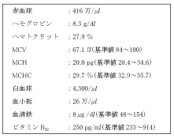
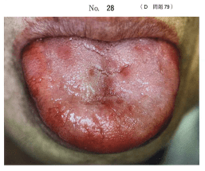
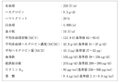
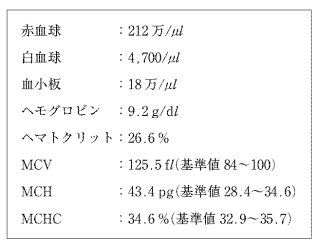

| 指数 | 意味 | 基準値 |
|---|---|---|
| MCV（平均赤血球容積） | 赤血球1個の大きさ | 80〜100 fl |
| MCH（平均赤血球Hb量） | 赤血球1個のHb量 | 27〜31 pg |
| MCHC（平均赤血球Hb濃度） | 赤血球1個のHb濃度 | 30〜35% |
| 分類 | MCV | MCHC | 代表的疾患 |
|---|---|---|---|
| 小球性低色素性 | ≤80 | ≤30 | 鉄欠乏性貧血、サラセミア、鉄芽球性貧血 |
| 正球性正色素性 | 81〜100 | 31〜35 | 再生不良性貧血、溶血性貧血、急性出血 |
| 大球性正色素性 | ≥101 | 31〜35 | 巨赤芽球性貧血（VB12欠乏・葉酸欠乏） |
小球性低色素性貧血に分類されるのはどれか。1つ選べ。
【解説】鉄欠乏→ヘモグロビン合成障害→赤血球が小さく（MCV↓）色が薄い（MCHC↓）。溶血性貧血・再生不良性貧血は正球性正色素性。巨赤芽球性貧血は大球性。骨髄異形成症候群は大球性を示すことが多い。
全貧血の80〜90%を占める最も頻度の高い貧血。女性に多い（男:女＝1:5〜6）。原因は鉄需要の増大（妊娠・出産）、慢性出血、鉄分摂取不足。
| 所見 | 詳細 |
|---|---|
| 眼瞼結膜の蒼白 | Hb値の低下を反映。貧血のスクリーニングとして最重要 |
| 匙状爪（スプーンネイル） | 爪が薄くなりスプーン状に反り返る |
| 平滑舌 | 舌乳頭の萎縮により舌が滑らかになる |
| 口角炎 | 口角のびらん |
| 異食症 | 氷を好んで食べるなどの異常な食嗜好 |
| 検査項目 | 変化 |
|---|---|
| Hb、Ht | ↓ |
| MCV、MCHC | ↓（小球性低色素性） |
| 血清鉄 | ↓ |
| フェリチン（貯蔵鉄） | ↓（最も早期に低下） |
| TIBC（総鉄結合能） | ↑ |
疾患と症状の組合せで正しいのはどれか。2つ選べ。
【解説】鉄欠乏性貧血→舌乳頭萎縮→平滑舌は正しい。Hunt症候群→鼓索神経障害→味覚障害も正しい。Sjögren症候群は口腔乾燥（流涎ではない）。巨赤芽球性貧血は出血傾向ではなくHunter舌炎。SJSは皮膚粘膜のびらん（電撃痛ではない）。
鉄欠乏性貧血を疑う患者の診察で留意すべき部位はどれか。2つ選べ。
【解説】鉄欠乏性貧血の診察で重要なのは結膜（蒼白→Hb低下を反映）と指爪（匙状爪→鉄欠乏に特徴的）。頭髪・外陰部・足底は鉄欠乏性貧血の特異的所見ではない。
眼瞼結膜の所見と関連するのはどれか。1つ選べ。
【解説】眼瞼結膜の蒼白はヘモグロビン値の低下を反映する。結膜は血管が豊富で色調変化を観察しやすい部位。血小板数は点状出血（紫斑）、白血球数は感染徴候と関連。
27歳の女性。顎変形症の手術を希望して来院した。時々立ちくらみや、めまいを自覚しているという。血液検査の結果を表に示す。
立ちくらみや、めまいの原因として考えられるのはどれか。2つ選べ。
【解説】27歳女性の立ちくらみ・めまい→鉄欠乏性貧血を疑う。若年女性では月経による慢性出血と鉄分摂取不足が二大原因。血液検査でMCV↓・MCHC↓であれば確定的。VB12欠乏は大球性貧血で、若年女性では稀。
鉄欠乏性貧血＋舌炎＋嚥下障害の三徴を示す症候群。鉄欠乏性貧血の7〜19%に認められる。咽頭粘膜の萎縮により嚥下困難（sideropenic dysphagia）を生じる。
77歳の女性。舌の痛みと嚥下困難を主訴として来院した。半年前から舌の痛みに気付いていたが放置していた。2か月前から嚥下困難を自覚しているという。初診時の口腔内写真（別冊No.27）を別に示す。血液検査の結果を表に示す。
嚥下困難の原因として考えられるのはどれか。1つ選べ。

【解説】舌の痛み＋嚥下困難＋血液検査で貧血（鉄欠乏性を示唆）→Plummer-Vinson症候群。鉄欠乏により咽頭粘膜が萎縮し嚥下困難を生じる。球麻痺は神経性、鼻咽腔閉鎖不全は軟口蓋の問題であり貧血とは関連しない。
ビタミンB12は胃壁細胞から分泌される内因子と結合し、回腸遠位部で吸収される。内因子が欠乏するとVB12が吸収できなくなる。
VB12欠乏による舌炎。舌乳頭の萎縮により舌が平滑化・発赤し、灼熱感・疼痛を伴う。悪性貧血の約75%に認められる。
| 検査項目 | 変化 |
|---|---|
| MCV | ↑（大球性） |
| LDH | ↑（巨赤芽球の骨髄内崩壊による） |
| 間接ビリルビン | ↑ |
| 血清VB12 | ↓ |
| 骨髄 | 巨赤芽球の出現 |
67歳の女性。味覚異常を主訴として来院した。6か月前から自覚していたが変化がないという。2年前に胃を切除している。初診時の口腔内写真（別冊No.28）を別に示す。血液検査の結果を表に示す。
考えられるのはどれか。1つ選べ。

【解説】味覚異常＋胃切除の既往＋舌の萎縮所見→胃切除後のVB12吸収不全→Hunter舌炎。Plummer-Vinson症候群は鉄欠乏性貧血に伴うもので、胃切除との関連は薄い。ITPは血小板減少で出血傾向を呈し舌の症状とは異なる。
55歳の女性。舌の灼熱感を主訴として来院した。3年前に胃全摘出術を受け、6か月前から自覚しているという。初診時の舌の写真（別冊No.10）を別に示す。血液検査の結果を表に示す。
考えられる原因はどれか。2つ選べ。

【解説】胃全摘後3年→胃壁細胞からの内因子分泌が消失→VB12が回腸で吸収できない→巨赤芽球性貧血→Hunter舌炎。内因子の欠乏＋VB12の吸収不全が直接の原因。葉酸は空腸で吸収されるため胃切除の影響は少ない。
53歳の女性。味覚障害を主訴として来院した。半年前から味覚低下を自覚するようになったという。舌背のカンジダ培養検査は陰性で唾液分泌量も正常であった。初診時の舌の写真（別冊No.37）を別に示す。血液学検査の結果を表に示す。
診断に必要な追加すべき検査項目はどれか。2つ選べ。

【解説】味覚障害＋舌の萎縮→VB12欠乏（Hunter舌炎）と亜鉛欠乏の鑑別が必要。味覚障害の原因として亜鉛欠乏とVB12欠乏は二大原因であり、追加検査として両者を測定する。IgEはアレルギー、CRPは炎症、アミラーゼは唾液腺・膵臓の検査。
貧血では酸素運搬能の低下を代償するため、心拍数増加（頻脈）、心拍出量増加、呼吸促進が起こる。
頻脈がみられるのはどれか。2つ選べ。
【解説】発熱では代謝亢進に伴い心拍数が増加する（体温1℃上昇で約10回/分増加）。貧血では酸素運搬能低下を代償するため頻脈となる。甲状腺機能低下は徐脈。血管迷走神経反射は徐脈＋血圧低下。
血小板数が減少するのはどれか。すべて選べ。
【解説】再生不良性貧血は造血幹細胞の障害→汎血球減少（赤血球↓・白血球↓・血小板↓）。急性リンパ性白血病は白血病細胞の骨髄浸潤→正常造血の抑制→血小板減少。血友病は凝固因子の欠乏であり血小板数は正常。
| 貧血の種類 | 赤血球指数 | 口腔症状 | 特徴的所見 |
|---|---|---|---|
| 鉄欠乏性貧血 | 小球性低色素性 | 平滑舌、口角炎 | 匙状爪、結膜蒼白、フェリチン↓ |
| 巨赤芽球性貧血 | 大球性正色素性 | Hunter舌炎（灼熱感） | 胃切除後、LDH↑、神経症状 |
| Plummer-Vinson | 小球性低色素性 | 舌炎＋嚥下障害 | 鉄欠乏性貧血に合併 |
| 再生不良性貧血 | 正球性正色素性 | 歯肉出血、口腔粘膜出血 | 汎血球減少 |
| 検査項目 | 関連する疾患 |
|---|---|
| 血清亜鉛（Zn） | 亜鉛欠乏性味覚障害 |
| ビタミンB12 | 巨赤芽球性貧血（Hunter舌炎） |
| 血清鉄・フェリチン | 鉄欠乏性貧血 |
| 唾液分泌量 | Sjögren症候群、薬剤性口腔乾燥 |